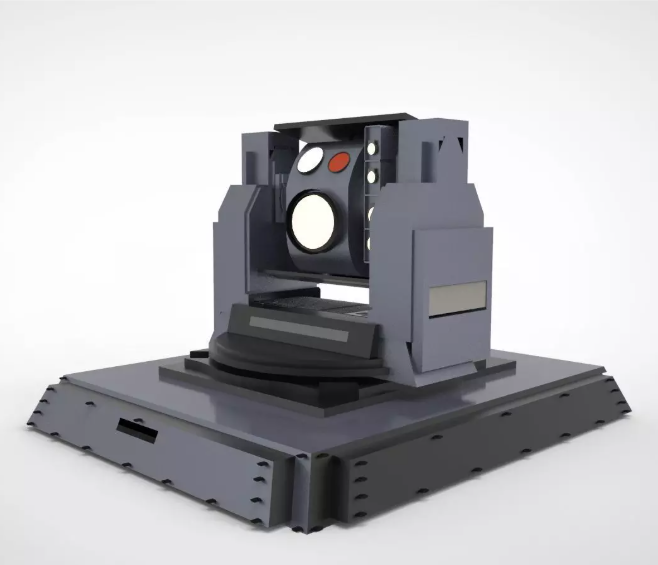
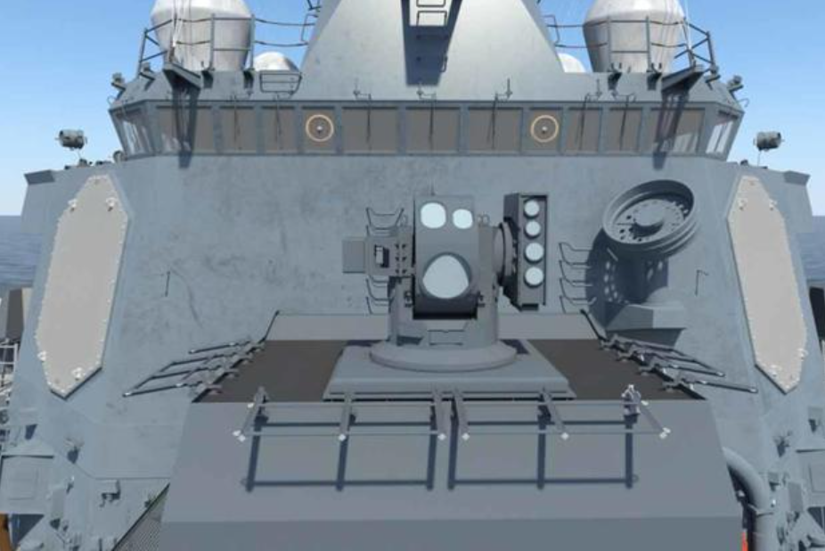
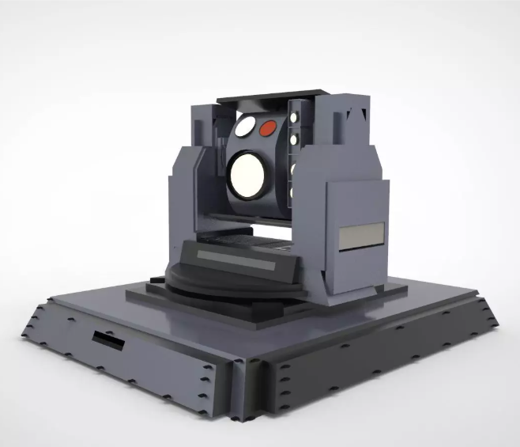
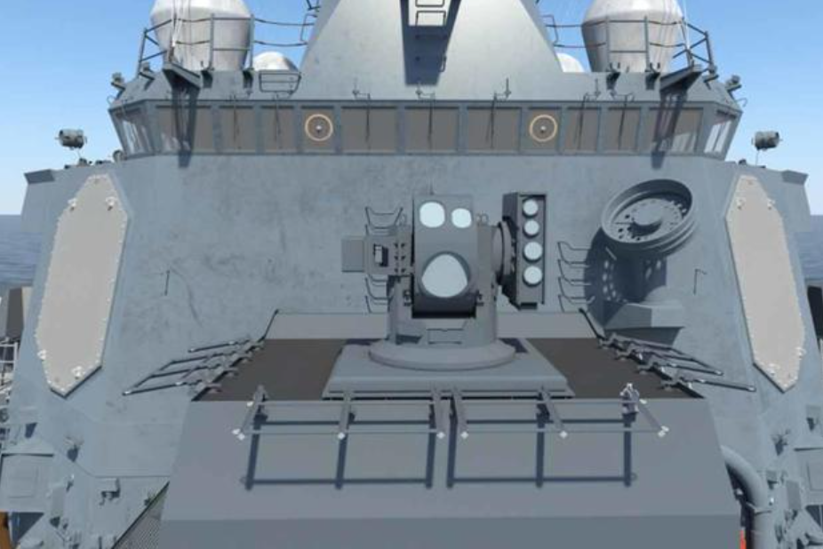
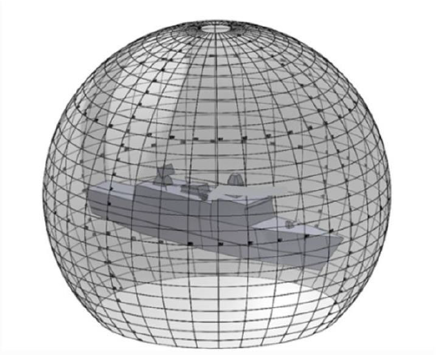
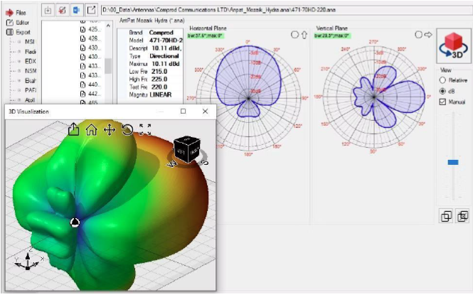
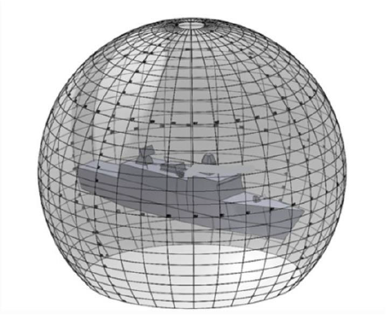
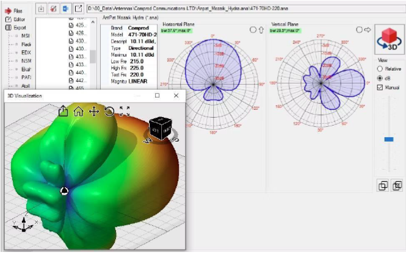

Cybertruck Robotic Cell Re-Design
Problem: A key robotic cell on the Cybertruck production line was improperly disposing of rejected seat structures, dropping them on the floor. This resulted in hundreds of thousands of dollars in annual material scrap, frequent production downtime for manual retrieval, and created a safety hazard for associates entering the cell.
My Solution: As the sole owner of this project, I engineered a complete mechanical and robotics solution. I designed a custom, non-intrusive rejection chute from the ground up using Solidworks and Siemens NX, ensuring it integrated seamlessly into the existing cell's tight footprint. I then single-handedly reprogrammed the entire Fanuc robotic logic, rewriting the pathing to flawlessly deposit rejected parts into the new assembly.
Results: I drove the project through the full lifecycle, leading a cross-functional team of stakeholders from manufacturing, compliance, and testing to successfully implement my design. The solution completely eliminated the scrap issue and associated downtime, delivering an annual savings of over $175,000 while improving cell safety and maintaining the original workflow for production associates.
 



Advanced Classified System Design TPM
Problem: Tasked as the integration lead for a proprietary, mission-critical system on the CSC, I was responsible for navigating conflicting constraints from external vendors and internal RF, electrical, structural, and mechanical design teams. The challenge was to find a viable integration path that did not compromise system performance, ship layout, or classified design integrity, including necessitating redesign of sections of the ship's hull.
My Solution: I took extreme ownership, serving as the single point of contact between 4 key vendors and internal cross-functional teams. Leveraging my security clearance which vendors lacked, I personally took the initiative to drive the technical design iterations within the classified environment. Using SolidWorks, I modeled and proposed design changes to resolve complex physical, thermal, and RF constraints, and led the hull redesign effort collaborating with the internal mechanical team and the primary structural vendor. My key responsibility was distilling highly technical, classified requirements into actionable, unclassified tasks for vendors.
Results: By leading the integration and design iterations with vendors and presenting solutions to upper management, I successfully aligned all stakeholders on a final, approved integration path, including the necessary hull modifications. This cleared a major bottleneck for a critical program milestone, ensuring the project remained on schedule while meeting all system requirements within a secure framework.
 



CSC Topside Mechanical Design & Integration
Problem: Relocating critical topside equipment on the CSC required complex mechanical integration solutions to satisfy competing constraints from RF performance, thermal loads, structural integrity, aerodynamic factors, and vendor specifications. Failure to find mechanically sound placements would impact system functionality and project timelines.
My Solution: I led the mechanical design effort for several key equipment placements. This involved creating detailed feasibility studies and 3D models in SolidWorks, utilizing tools like Line-of-Sight analysis to evaluate integration options against all constraints. I collaborated closely with internal RF, Thermal, and Aero analysis teams to incorporate their findings into the mechanical designs, and worked directly with equipment vendors to ensure mechanical compatibility. I then presented the technical trade-offs and proposed recommended solutions to senior management.
Results: My mechanical design analyses and cross-functional leadership resulted in the successful approval and implementation path for 9 critical equipment placements within 4 months. This work ensured the mechanical integrity and functional performance of the topside systems while balancing complex interdisciplinary requirements.


Helicopter Landing Thermal Analysis (CFD)


Company-Wide Line-of-Sight (LOS) Process Overhaul